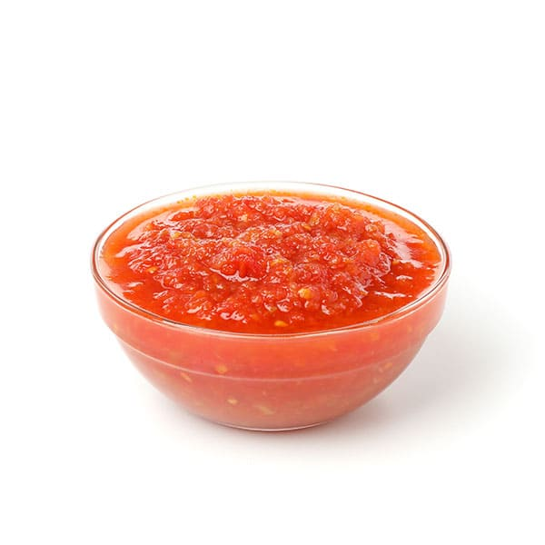

This will turn your tacos intos real tacos.
Salsa is what make every mexican food spicy. As Mexican people say if is not spicy it doesn't taste.
Keep on mind that the proportion of garlic and onion is just the basics for every salsa. Fried or boiled or just
as it is are thigs that change the taste or texture. Mix the as you want to personalize your salsa
INGREDIENTS
- 1/2 Onio
- 1 Garlic teeth
- 3 Serrano chiles
- 4 tomato
- A bit of salt
DIRECTIONS
This time We're gonna try frying every single ingredient. But be careful. Each one has a time to remain on the heat
- 1- Pan and oil
- Let's add some vegetable oil on our pan and let it get 180 degreed
- 2- Tomato
- The firs thing we're gonna and will be tomatos. Since is very juicy will take a lot to get as we one
- 3- Onion and chiles
- Next we're gonna add the onion and chiles. Take them out until when they get almost black little borns around them
- 4 - Blend
- Put all ingredients and salt in the blender and turn it on at a low speed
PREV NEXT